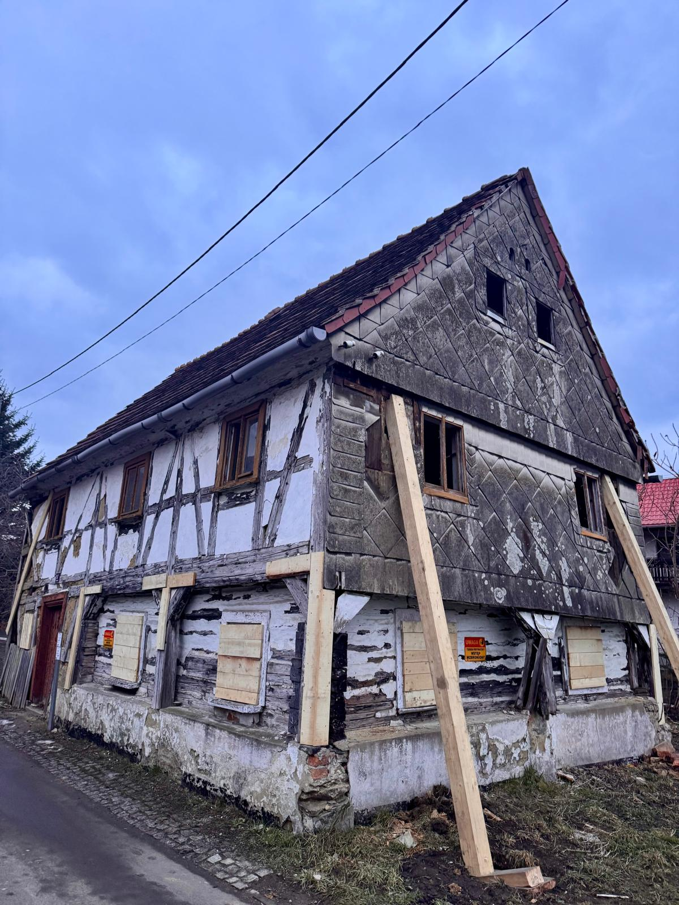
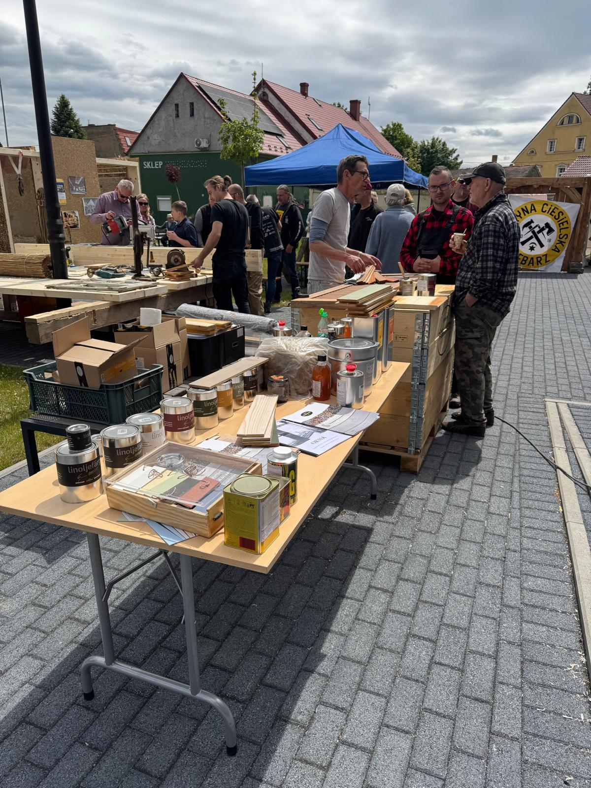
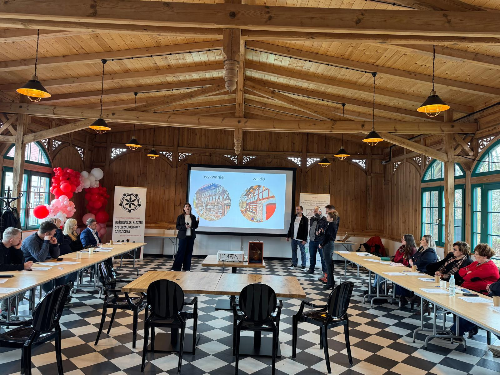
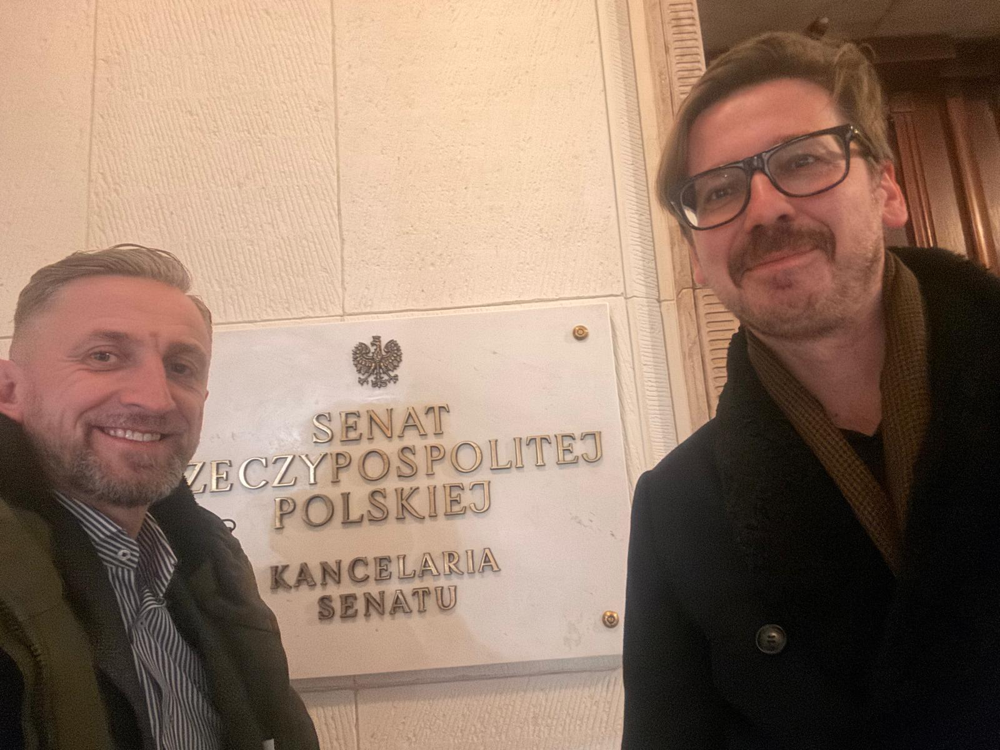
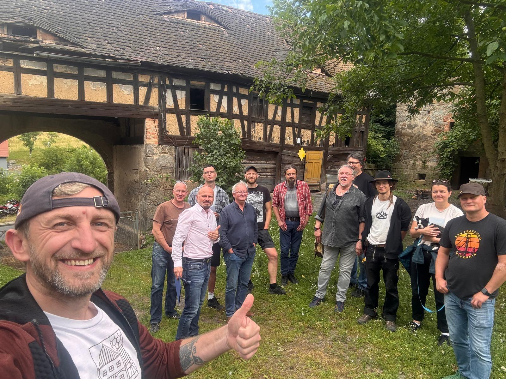
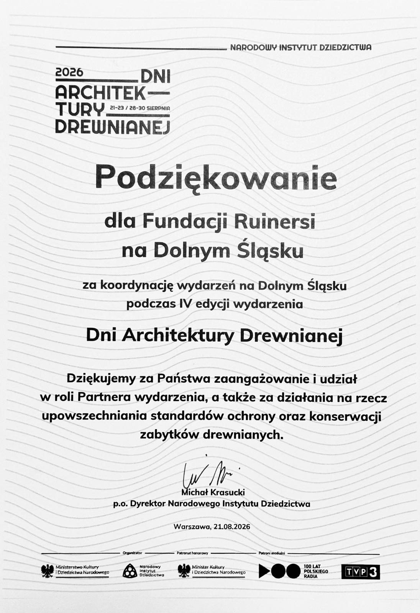
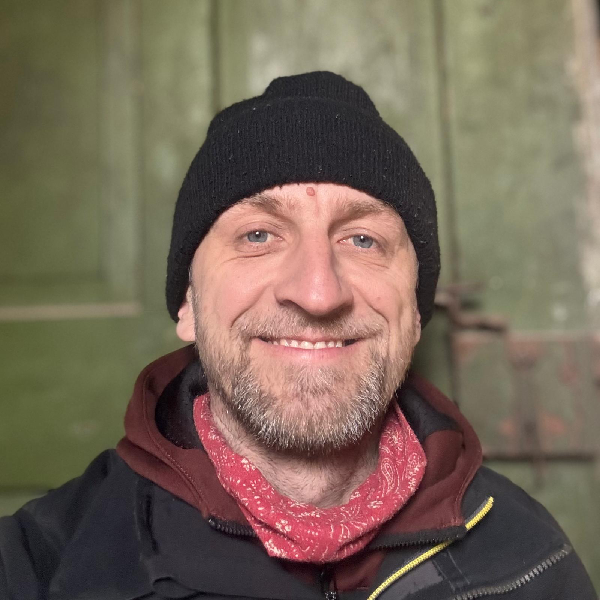
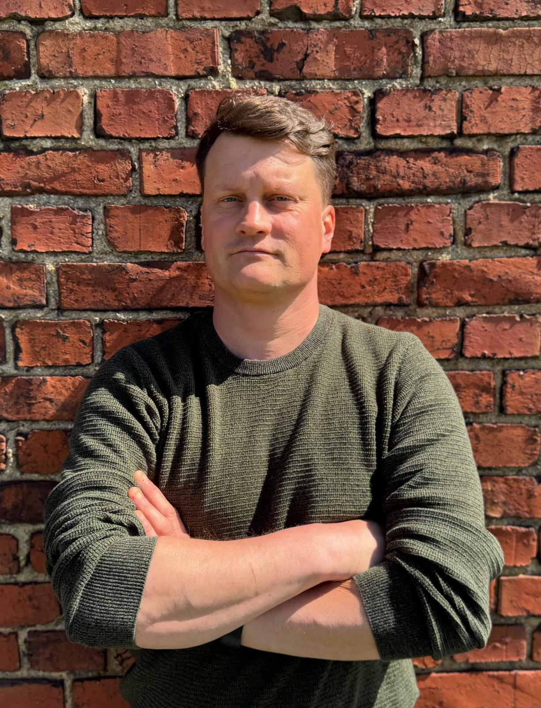
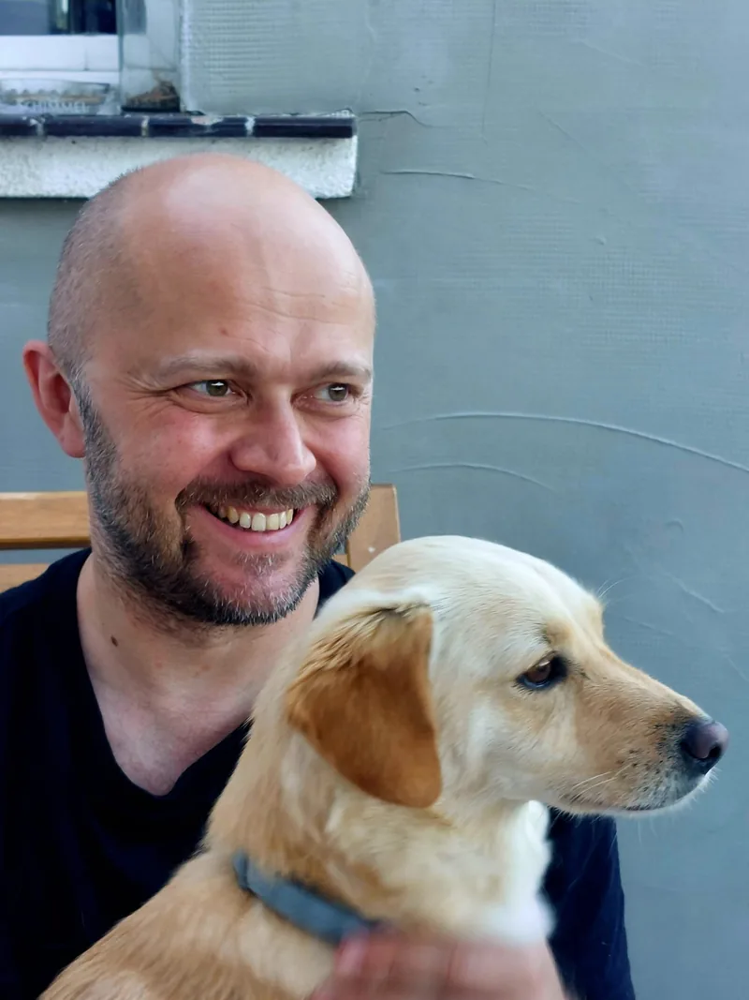

We educate
Owners of historic buildings and people preparing for renovation.
Home/About the Foundation
Our Foundation protects traditional architecture, cultural landscapes and knowledge about historic building.
We bring together owners of old houses, craftspeople, experts, civil-society organisations, academia and local authorities. We help people make informed decisions, promote responsible renovation and create a meeting place for everyone who wants to preserve heritage for future generations.

It all began with the Ruinersi na Dolnym Śląsku group founded by Darek Borkowski. Social media became a place for exchanging experience, and over time online discussions moved into the real world: renovated houses, workshops, conferences and Ruinersi gatherings.
The Foundation allowed us to develop this work, build partnerships with institutions and bring the voices of owners and community activists into public debate.
We help owners make informed decisions, share knowledge about traditional building and connect people and institutions that can protect heritage together.
Owners of historic buildings and people preparing for renovation.

Workshops, conferences, Ruinersi gatherings and themed events.

Owners with specialists, craftspeople, organisations and institutions.

The perspective of community-led heritage protection in public debate.
We create publications and educational materials, promote traditional crafts, share good renovation practice, develop the Polish Cluster for Community Heritage Protection and initiate regional, national and cross-border projects.
We believe effective heritage protection requires honest dialogue and mutual understanding. We want to build bridges between people who care for historic buildings every day and the institutions responsible for protecting them.
We create space for dialogue with local authorities and heritage professionals. We bring the practical experience of owners, craftspeople and civil-society organisations into those conversations, while also helping people understand complex procedures, responsibilities and the core aims of conservation.
We are not interested in creating divisions. We look for solutions that preserve valuable buildings and landscapes while taking account of the real needs of owners and local communities.

Our Foundation is not a substitute for a conservation officer, architect, structural engineer or contractor. Our role is to help identify the problem, establish the right sequence of steps and find the right specialists.
We always encourage people to follow the proper procedures and seek expert help, especially where safety, legal requirements or heritage protection are involved.
We can help organise the first steps and identify what kind of specialist you need. We do not replace a designer, structural engineer or conservation professional.
Tell us what you do and where you work. We are looking for workshop leaders, advisers and project collaborators.
We discuss educational projects, protection of historic buildings, partnerships and system-level collaboration.
We will connect you with the right person and provide available press materials.

The award recognises the Ruinersi community’s work to protect heritage and share knowledge about traditional building.

The Narodowy Instytut Dziedzictwa thanked the Foundation for its partnership in the 4th Wooden Architecture Days. The opening in Świeradów-Zdrój demonstrated the model we believe in: institutions, local authorities, craftspeople, civil-society organisations and heritage owners working together.

Chair of the Management Board
Founder and Chair of the Foundation, and the driving force behind Ruinersi. He built the Ruinersi na Dolnym Śląsku community and develops partnerships with heritage owners, craftspeople, institutions and local authorities.

Management Board member
Responsible for the Foundation’s communication and organisational development. An IT specialist working in project team management and technical documentation. Passionate about Lower Silesian heritage and, since 2024, renovating a historic former German farmstead.

Management Board member
Architect with international experience and his own practice. Specialises in heritage, landscape and materials. SARP competition juror and member of the WSPÓŁ association.
Chair of the Foundation Council
Legal counsel specialising in contract law and construction investment. He has many years’ experience supporting investment processes, including work on listed buildings, and has provided legal support to NGOs for many years.
Foundation Council member
She has helped shape Fundacja Ruinersi na Dolnym Śląsku from the beginning as a member of the Foundation Council. Professionally, she coordinates companies; privately, she cheers on every old house given a second chance. Historic houses, timber-framed Umgebinde architecture and the history of Lower Silesia are especially close to her heart. She believes saving heritage is an investment whose value grows with each generation.
Foundation Council member
Heritage protection and conservation specialist, lecturer and Head of the Museum and Education Department at Książ Castle. Author of the book Historic Building: A Guide for Owners and Users and co-author of the series Renovating an Old House. She has taken part in programmes and training run by Historic England, SPAB, NID and Europa Nostra.
The Foundation is regularly supported by people who contribute their time and skills to events, projects, documentation and organisational work.
Volunteers
Museum professional with many years’ experience delivering exhibitions, documentation, education and public-engagement projects. Since 2020 she has worked with Fundacja Pałac Bojadła as coordinator of the project Revitalisation of Bojadła Palace and adaptation for cultural use.
Volunteer
Piotr has worked in rescue services and first aid for more than 20 years. He gained experience in local rescue groups and providing safety cover at large events. He served in the Polish Armed Forces and is now a reservist and volunteer firefighter.
As a first-aid instructor, he runs practical workshops and educational activities. At Ruinersi he shares knowledge about safety and rescue — including during workshops and community actions.